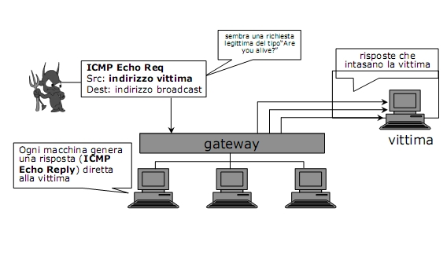

Torna alla pagina di Elementi di sicurezza e privatezza
:: Sicurezza nelle Reti ::
Connettività alla rete
Quali sono i vantaggi di connettersi a una rete? Che le reti private sono in grado di raggiungere e comunicare con il mondo esterno. Lo svantaggio principale è che il mondo esterno è in grado di raggiungere e interagire con le reti private.
I vantaggi di un computing network inoltre sono:
- condivisione delle risorse
- carico di lavoro distribuito
- maggiore affidabilità
- espandibilità
Gli svantaggi sono:
- incremento rischi di violazioni
- sorgenti di problemi di sicurezza
Le caratteristiche principali di una rete sono:
- anonimità: infatti si può risalire all'indirizzo IP della macchina, ma non si può effettivamente sapere chi c'è dietro.
- automazione: nodi intermedi e/o finali possono essere macchine con solo una minima supervisione umana.
- distanza: connessione tra nodi possibilmente molto distanti tra loro. Posso per esempio connettermi alla California pur non spostandomi da casa.
- opacità: utenti non possono dire se una macchina remota è nella stanza accanto o in un altro continente. Per questo chi ha ancora la 56k deve stare attento a quale numero viene connesso, perché se viene connesso a un server remoto a Taiwan che gli costa tot è fottuto.
- instradamento dinamico: interazioni tra due nodi possono seguire percorsi diversi per motivi di affidabilità e performance(vedi sistemi di elaborazione dell'informazione).
Sulla base di ciò ho due tipi di protocolli per gestire la rete:
- Protocollo TCP che gestisce il trasporto dei pacchetti. Il TCP simula un canale di comunicazione per spedire i pacchetti e ne controlla l'arrivo.
- Protocollo IP è quello che gestisce l'instradamento dei pacchetti. Esso identifica gli host con gli indirizzi e stabilisce dove deve andare un pacchetto.
Tipi di attacchi
Qualunque sia il tipo di attacco l'obiettivo primario di un attaccante è sempre quello di sottrarre informazione o degradare il sistema.
Ci sono due tipi di attaccanti:
- intruso attivo: può alterare il messaggio e inviare messaggi falsi spacciandosi per il mittente autentico.
- intruso passivo: legge il messaggio senza alterarlo.
Le quattro principali tipologie di attacco sono:
1. interruzione: una parte del sistema viene distrutta o diventa non utilizzabile. Questo è un attacco alla disponibilità del sistema.
2. intercettazione: quando un soggetto non autorizzato ottiene un accesso ad un componente del sistema. Alcuni tipi di attacchi possono richiedere una preparazione preventiva a livello fisico per installare dispositivi pirata per agganciarsi alla rete e per installare software di supporto alla intercettazione. Altri possono sfruttare debolezze intrinseche di protocolli e software di rete e il fatto che un utente abbia disatteso qualche norma comportamentale imposta dalla politica di sicurezza. Questo è un attacco alla confidenzialità del sistema. L'intercettazione è basata su:
- analizzatori di traffico su rete
- sniffing(sniffare): applicazioni di analisi del traffico su rete cattura tutti i pacchetti che transitano su rete tramite la scheda di rete (solitamente infatti la scheda di rete passa al sistema operativo solo il traffico destinato a quella macchina, mentre qui passa tutto).
- spoofing(spacciarsi per): lo spoofing è un'azione di camuffamento. Ci sono diversi tipi di spoofing:
- file spoofing: tecnica usata per simulare che un file corrisponde a un tipo diverso da ciò che è realmente. Ad esempio modificando le estensioni associate a un file (più facile in Windows perchè l'estensione se non esplicitato non viene visualizzata) o modificare le intestazioni del protocollo MIME che gestisce gli allegati delle mail. In questo modo gli allegati vengono visualizzati come un certo tipo (es immagini) ma nascondono in realtà degli script che partono una volta aperto l'allegato.
- IP spoofing: tecnica che consiste nella creazione di un pacchetto IP nel quale viene modificato l'indirizzo IP del mittente, quindi quando l'IP sorgente di un pacchetto viene modificato.
- masquerade: una macchina dichiara di essere una macchina diversa. Ci sono due tipi di attacchi di questo tipo:
- URL confusion: è legato al fatto che i nomi di dominio si possono facilmente confondere(es: xyz.com viene mascherato con xyz.it).
Esempio: Cthulhu crea una pagina web simile a quella di una banca, invia una mail ad un certo numero di utenti con il link all'indirizzo del proprio sito, opportunamente mascherato (se l'indirizzo originale è www.banca.it l'indirizzo di Cthulhu sarà www.banca.com). L'utente inconsapevolmente si loggerà inserendo username e password al finto portale ed in questo modo Cthulhu gli avrà estorto dei dati che gli permetteranno di rubargli l'identità nel vero portale della banca e avvicinarsi sempre di più alla conquista del mondo muahahahahahaha IA IA CTHULHU FATGHA.
- Phishing: attraverso messaggi di posta elettronica fasulli opportunamente creati per apparire autentici si cerca di estorcere dati personali all'utente con la finalità di furto d'identità(es: la mail fasulla delle poste italiane che vi segnalava che eravate in rosso sul conto, conto che probabilmente nemmeno avevate).
- man in the middle: attacchi in cui l'intruso riesce a dirottare il traffico tra client e server legittimi. E' una categoria molto ampia di attacchi. Comprende attacchi di tipo:
- fisico(attaccante controlla un firewall) o logico come può essere la TCP session hijacking, cioè l'inserimento in una sessione TCP attiva. Spiando una connessione attiva è possibile sostituirsi ad uno dei due interlocutori. Es: Sammy spia la connessione tra Sabry e Piur e registra i numeri di sequenza dei pacchetti (logico, è gelosa). Successivamente Sammy blocca Piur che vede interrompersi la sua sessione interattiva. Sammy invia pacchetti con il corretto numero di sequenza con mittente Piur in modo che Sabry non si accorga di nulla e creda di parlare ancora con Piur ("Ehi Piur non è ancora ora che riporti tua moglie al parco di Yellostone? In fondo è là il suo ambiente naturale!" dice la Sabry. "Ti faccio vedere io dov'è il tuo ambiente naturale!" risponde il finto Piur(Sammy) e va là e la sbrana).
- full(l'attaccante vede entrambi i flussi e riesce ad apparire sia come un interlocutore sia come l'altro) o half-duplex
- programmi che emulano servizi del sistema registrando informazioni riservate all'utente.
3. modifica: soggetto non autorizzato entra in possesso di una componente del sistema, la modifica e la introduce di nuovo nel sistema. Questo è un attacco all'integrità
4. produzione: soggetto non autorizzato produce componenti nuove e le immette nel sistema. Sono attacchi tesi a degradare l'operatività del sistema con diverse tecniche:
- virus
- worm
- denial of service
Questi attacchi minacciano l'integrità e la disponibilità, più raramente e indirettamente la confidenzialità
Denial of service
Concentriamoci su questo tipo di attacco. Un attacco DoS (Denial of Service) ha come obiettivo quello di far saltare il servizio offerto da un sistema, quindi vedranno negato l'accesso al sistema(alle informazioni e ai servizi che offre) anche utenti autorizzati.
Un attacco di questo tipo viene realizzato inondando di richieste casuali la macchina obiettivo che non riuscirà più a sopportare il carico di richieste e smetterà di funzionare.
I diversi tipi di DoS sono:
- ping of death: è un tipo di Denial of Service e si basa sul protocollo ICMP, specialmente sul comando ping. Il comando ping viene usato per determinare se un sistema remoto è raggiungibile o meno dal proprio sistema locale. Il problema quindi non riguarda solo i computer, ma tutto ciò che si connette direttamente alla rete (es: stampanti, router).
Le specifiche del TCP/IP fissano la grandezza massima di un datagramma IP in 65536 bytes, di questi solo 20 sono riservati all'intestazione del pacchetto. Però all'interno del pacchetto risiede una richiesta ICMP costituita da 8 bytes di header seguita dal numero di byte riservati per i dati, la cui dimensione massima è 65507 bytes. Il problema del ping of death nasce dalla possibilità di generare una richiesta ICMP_ECHO in un pacchetto con più di 65507 byte di campo dati.
Da notare che macchine simili possono reagire in modo diverso, in quanto in alcuni casi il fenomeno si può verificare in condizioni di carico gravoso su macchine che in altre condizioni non avevano presentato il problema. In alcuni casi si può anche arrivare al crash e al reboot del sistema.
- SYN flooding: è un attacco nel quale l'attaccante genera un flusso di pacchetti con il flag SYN attivo e con l'indirizzo IP spoofato, per non rivelare il vero indirizzo IP da cui sferra l’attacco e per rendere i pacchetti SYN indistinguibili dai legittimi pacchetti SYN.
Con questo tipo di attacco la coda delle connessioni half-opened dello stack TCP/IP viene saturata, quindi la vittima non accetterà ulteriori connessioni, anche legittime.
Slide chiarificatrice:

Contromisure:
Gli stack moderni sono resistenti a questo tipo di attacco.
SYN COOKIE: il server prepara un cookie la cui integrità è garantita attraverso meccanismi di firma, con informazioni relative alla connessione, che rispedisce al client. In questo modo l'allocazione delle risorse viene posposta finché non si riceve il terzo pacchetto (ACK).
- smurf attack: l'attaccante intasa la vittima sfruttando il protocollo ICMP. Infatti invia una ICMP Echo Request con fonte: indirizzo vittima e destinazione: indirizzo broadcast(quindi tutti gli host della rete locale). Quindi tutte le macchine che ricevono la richiesta generano una ICMP Echo Reply diretta alla vittima, così facendo le risposte generate intaseranno la vittima.
Slide chiarificatrice:

Contromisure:
Disattivare sul proprio router esterno la funzione di risposta delle richieste ICMP mandate all'indirizzo di broadcast della rete dall'aggressore.
- DDoS (distributed denial of service): è un particolare tipo di DoS in cui il malintenzionato infetta altri computer sulla rete per fare in modo di non essere egli stesso colui che effettua direttamente l'attacco, ma altri computer di ignari utenti.
La
differenza con il DoS è che in DoS è l'utente malizioso a sferrare l'attacco mentre in DDoS l'utente lo scatena ma non lo effettua in prima persona. Nel DDoS gli attori sono:
- vittime primarie:
- macchine zombie elevato numero di macchine ignare di essere usate per l'attacco.
- macchine master minor numero di macchine infettate o macchine dell'attaccante che sincronizzano le zombie.
- vittime finali: che subiscono richieste dalle macchine zombie.
Le fasi che caratterizzano questo attacco sono due:
1. Vengono infettate molte macchine che ricoprono il ruolo di zombie e master, questa fase può durare anche mesi.
2. Le vittime finali vengono inondate di richieste e pacchetti dalle zombie.
Attacchi ad applicazioni web
Gli script che risiedono su un web server possono interagire con altri sistemi attraverso database server o sergenti con contenuto dinamico. Anche questi sono vulnerabili a certi tipi di attacchi:
- cross-site scripting (XSS)
- SQL injection
L' XSS è un attacco che permette ad un malintenzionato di inserire codice arbitrario come input in un'applicazione web, consentendogli di raccogliere dati, leggere cookie, visualizzare falsa pubblicità e quindi modificare il contenuto del sito. Potenzialmente la vittima dell'attacco non è solo il sito ma anche l'utente perché un semplice link che porta ad una pagina di un sito non protetta può creare danni.
Può essere dovuto a due fattori:
- siti web che si fidano dei dati che arrivano dall'esterno: quando non c'è da parte del sito un sufficiente controllo dell'input e quindi l'attaccante è in grado di inviare uno script sapendo che questo non verrà controllato, anzi verrà eseguito.
Ad esempio un forum dove è possibile scrivere messaggi in codice HTML senza alcun controllo: l'attaccante inserisce uno script e gli utenti che accedono a quel messaggio del forum vengono reindirizzati su un altro sito dove sono presenti altri script che raccolgono dati.
- siti web spesso visualizzano quello che ricevono in input (echo back): quando viene utilizzato il metodo HTTP GET e quindi le informazioni ricercate vengono trasmesse tramite URI in chiaro. In questo modo se ad esempio sono in un motore di ricerca e cliccando su cerca invio la richiesta, questa viene visualizzata nell'URI ed è facile recuperare le informazioni della variabile che effettua la ricerca e possiamo sfruttare questa vulnerabilità modificando il GET di ritorno per accedere a dati ad esempio del database a cui non potremmo accedere.
Contromisure:
- per gli sviluppatori: controllare ogni informazione inserita in input dagli utenti prima di inoltrarla alle applicazioni.
- per gli utenti: tenere sempre aggiornato il proprio browser e scegliere quelli che permettono di disabilitare l'utilizzo di linguaggi quali javascript, vbscript, activix.
L' SQL injection invece è un attacco rivolto alle applicazioni web e coinvolge non solo SQL, ma qualsiasi linguaggio di programmazione e qualsiasi DBMS.
L'attacco consiste nell'inserimento di codice maligno nelle query SQL, sfruttando la mancanza di controlli sui dati da input dell'applicazione web.
L'input può essere trasmesso in tre modi:
- URL (query string)
- form HTML
- cookie costruito su misura
L'attacco provoca:
- manipolazione indesiderata dei dati
- accesso ad aree riservate
- visualizzazione di dati riservati
Esempio:
Abbiamo una variabile $id presa in input dalla query string, teoricamente di tipo intero, ma non validata.
$sql = "SELECT * from articoli WHERE id=$id";
se un attaccante in $id inserisce
$id = 1; DROP table articoli; la query diventerà:
$sql = "SELECT * from articoli WHERE id = 1; DROP table articoli;
che ovviamente provoca la cancellazione della tabella articoli.
Contromisure possibili sono:
- controlli sul tipo di dato: tramite l'utilizzo di alcune funzioni si forza una variabile ad appartenere ad un certo tipo.
- creazione di filtri tramite espressioni regolari: i dati in input vengono descritti da una espressione regolare. Ad esempio controllare che l'input sia formato solo dalle lettere dalla A alla Z.
- eliminazione di caratteri potenzialmente dannosi: si eliminano i caratteri che hanno un significato in un'interrogazione SQL, quindi , ; " '
- escape(\) di caratteri potenzialmente dannosi: il carattere sul quale viene effettuato il quoting (\) viene interpretato letteralmente.
Autenticazione in sistemi aperti
Autenticarsi in sistemi aperti significa che gli utenti devono dimostrare la propria identità per ogni servizio utilizzato e i server devono garantire la propria identità al client. Per controllare chi è chi e cosa è cosa si sono create delle carte d'identità particolari chiamate certificati digitali.
Un certificato digitale è un documento elettronico che attesta, con una firma digitale, l'associazione tra una chiave pubblica e l'identità del soggetto. Esso è garantito da una terza parte fidata nota col nome di Certification Authority (per gli amici CA) che rilascia il certificato digitale contenente le informazioni dell'utente per cui rilascia il certificato, oltre alla chiave pubblica.
Il certificato lega il nome di un soggetto ad una chiave pubblica e per verificarne l'autenticità basta confrontarla con la chiave pubblica della CA.
La creazione di un certificato digitale avviene tramite queste fasi:
1. l'utente deve provare la propria identità alla CA (certification authority)
2. la CA verifica l'autenticità della chiave
- coppia chiave pubblica/privata generata dalla CA
- coppia chiave pubblica/privata generata dall'utente
3. la CA crea un certificato digitale inserendo la chiave pubblica e i dati identificativi dell'utente
4. la CA firma il certificato con la propria chiave privata
Lo standard più diffuso per la rappresentazione di certificati è lo standard X.509. Esso definisce:
- il formato dei certificati (insieme dei campi raccolti nel certificato)
- la codifica, che è in particolare la ANS.1
- la revoca dei certificati (diverse possono essere le cause: chiavi pubbliche le cui corrispondenti chiavi private sono compromesse, chiavi pubbliche le cui chiavi private sono state perse o semplicemente chiavi non più usate)
Lo standard X.509 supporta due principali sistemi di revoca:
- data di validità
- revoca esplicita
Il CRL (certificate revocation list) è una lista di certificati revocati che viene sempre controllata prima di considerare un certificato valido.
Per ogni certificato revocato il CRL contiene le seguenti informazioni:
- issuer
- last update date
- next update date
- firma CA
- lista dei numeri di serie dei certificati revocati con data di revoca
Non esiste una singola CA che certifica tutte le chiavi pubbliche, ma sono organizzate in modo gerarchico: la root authority firma certificati per authority di livello più basso, authority di basso livello firmano certificati per singole reti e così via creando catene di certificati.
Firewall
Un firewall è un sistema di controllo degli accessi che verifica tutto il traffico che transita attraverso lui. In particolare:
- verifica pacchetti in transito
- maschera indirizzi interni (NAT)
- blocca pacchetti non autorizzati e/o pericolosi.
Permette o nega il passaggio del traffico basandosi su una politica di sicurezza quindi significa che non rileva i percorsi non previsti dalla politica. Purtroppo controlla solo ciò che passa attraverso di lui perciò intrusioni dall'interno non sono rilevate e nemmeno se arrivano da un percorso non controllato. Inoltre non controlla file infetti da virus.
Le due specifiche ad alto livello, della politica di sicurezza, previste sono:
- default deny: tutto viene bloccato tranne quello che è autorizzato (politica chiusa)
- default allow: tutto viene permesso tranne quello che non è autorizzato (politica aperta)
Un concetto legato ai firewall è la Demilitarized Zone(DMZ):
è un segmento isolato di LAN (una "sottorete") raggiungibile sia da reti interne che esterne che permette, però, connessioni esclusivamente verso l'esterno: gli host attestati sulla DMZ non possono connettersi alla rete aziendale interna.
Tale configurazione viene normalmente utilizzata per permettere ai server posizionati sulla DMZ di fornire servizi all'esterno senza compromettere la sicurezza della rete aziendale interna nel caso una di tali macchine sia sottoposta ad un attacco informatico. Per chi si connette dall'esterno dell'organizzazione la DMZ è infatti una sorta di "strada senza uscita" o "vicolo cieco".(from Wikipedia)
Ci sono diversi tipi di firewall:
- software su processori general purpose. Soluzione più flessibile ed economica.
- software su processori GP.
- hardware dedicato(router). Soluzione più costosa.
Un'altra distinzione possibile è:
- network layer, quindi firewall che lavorano a livello di rete e cui appartengono le politiche di:
- packet filtering: non mantiene informazioni sullo stato della connessione.
- stateful packet filtering: si rende conto se due pacchetti fanno parte della stessa sessione.
- application layer, quindi firewall che lavorano a livello applicato e che si rifà alle politiche di:
- circuit level
- application proxy
Ora analizziamo in dettaglio il packet filtering: i pacchetti vengono filtrati solo sulla base delle informazioni presenti nell'header, quindi: indirizzo sorgente, indirizzo destinazione, porta sorgente, porta destinazione, tipo di protocollo, opzioni di protocollo.
Come già accennato sopra questo tipo di filtraggio non riesce a tracciare la correlazione tra pacchetti in una trasmissione, perché non mantiene informazioni sullo stato della connessione.
Le regole di filtraggio possibili per questa politica sono:
- controllare gli indirizzi usati per chiudere/aprire il traffico da determinate sorgenti a determinate destinazioni.
Quindi ad esempio se abbiamo un pacchetto che arriva sull'interfaccia esterna che però ha un mittente della rete interna lo si blocca.
- controllare i numeri di porta usati per bloccare/permettere servizi noti.
- bloccare un protocollo sospetto.
- una combinazione dei precedenti.
Le regole di filtraggio sono memorizzate in uno specifico ordine e ogni regola è applicata al pacchetto nell'ordine in cui è memorizzata.
Perciò:
- se una regola blocca la trasmissione/ricezione di un pacchetto il pacchetto è rifiutato, se la regola lo permette il pacchetto è permesso.
- se invece il pacchetto non soddisfa nessuna regola si applica la regola di default: deny, politica chiusa(tutto ciò che non è espressamente permesso viene negato).
Svantaggi Packet Filter:
- nelle connessioni TCP i numeri di porte minori di 1024 sono permanentemente assegnati a server.
- client usano porte nel range [1024, 16383] e devono perciò essere disponibili per i client per ricevere response.
- pacchetti in input diretti a qualche client con porta superiore a 1024 devono essere permessi (potrebbe essere la risposta di un server ad una connessione stabilita precedentemente o un traffico illecito, ma non si può saperlo con certezza se non si tiene traccia dello stato di ogni connessione).
- non è possibile accettare il traffico in ingresso solo se relativo ad una richiesta proveniente dall'interno (se il protocollo è TCP, cioè connection-oriented, si può fare; ma se è UDP, cioè connection-less, non si può).
Torna alla pagina di Elementi di sicurezza e privatezza